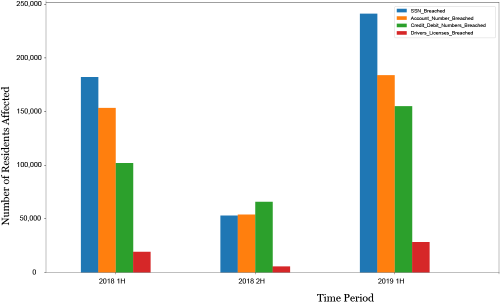
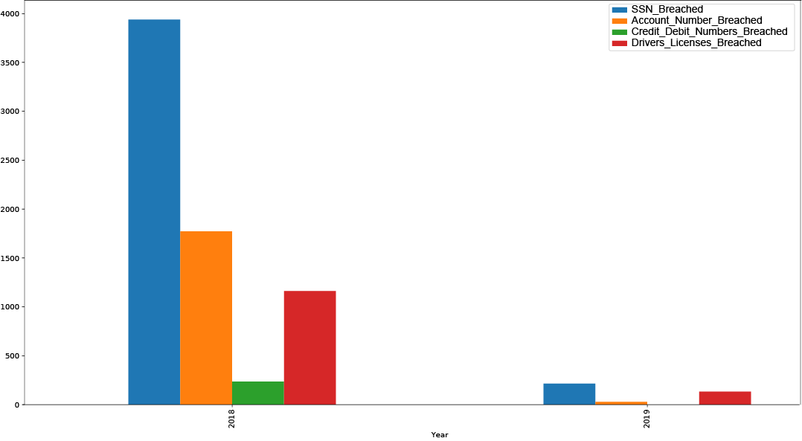

2019 is shaping up to be a rough year when it comes to their information being stolen or exposed online.
There is a new report about a data breach every day, and practically every person in the United States has been impacted by at least one incident. Large retailers, government agencies, universities, and banks: no one seems to be immune.
As things look, the bad news is going to keep piling up. The total number of breaches and victims in 2019 is expected to exceed 2018.
All Around the Country
Pretty much every state experienced data breaches between 2014-2019. That includes both the private and public sector, so companies based in that state as well as government agencies.
Source: Identity Theft Resource Center
The data breaches for the federal government bumped up the numbers for Maryland and Virginia, and Texas, Washington, and California have a lot of companies, so some of this is obvious.
Some States Have More Stolen Records than Others
While the total number of records stolen tend to match up with states with the most breaches, there are a few that jump out. Arizona and Colorado were similar in terms of number of breaches, but Arizona's breaches were more damaging, as there were more records stolen. And the reverse is true for Michigan and Minnesota: lots of breaches, not so many records.
Source: Identity Theft Resource Center
What's up with Wyoming? Seriously.
If it seems like there's more data breaches than there used to be, that's because it is. Data breaches have been on the rise each year, with 2017 being an aberration.
Breaches Rising
2019 has already seen almost the same number of breaches in the first six months as all of 2014 and 2015. 2018 broke records, but the first six months of 2019 already has more than
half of the number of breaches in all of 2018.
Source: Identity Theft Resource Center
Any company or organization can get hacked, because every organization now holds lots of potentially valuable information. Business is a big category and includes pretty much every retailer or commercial entity.
Banks are an obvious target since there is money involved, but healthcare organizations are common victims, too. But so are schools. And just because the entity is part of the government doesn't mean
they have better safeguards and don't get breached. Everyone is losing data.
Who is Losing the Data
The biggest fluctuation in data breaches were in business and healthcare over the last five years, while government, education, and financial services stayed pretty constant. A closer look at the numbers, however, show that in 2018 and 2019, they were pretty close.
Source: Identity Theft Resource Center
What Has Been Stolen
The United States doesn’t have a single breach notification law. In the case of a data breach, when consumer information is stolen or lost, companies have to navigate a tricky patchwork of state laws to make sure they are notifying affected individuals in the specified by the law. Some states require organizations to report the data breach to the attorney general’s office, or an equivalent state agency, as well as notifying the victims. Some states accept a copy of the breach notice while others require a bit more information. Massachusetts is one of the states that require organizations to be very specific about what kind of data was exposed or stolen, and the information is publicly available.
As expected, Social Security numbers are by far the most common pieces of data exposed in 2018 and 2019. More SSN were stolen in the first half of 2019 than the first half of 2018.
Comparing Types of Records
Breaches at healthcare organizations aren't so different from other breaches: Social Security numbers and account numbers are still the most commonly exposed type of data.
Across All Data Breaches

Only Healthcare-Related Data Breaches

Sources: Office of Consumer Affairs and Business Regulation, Commonwealth of Massachusetts
However, there were more breaches that exposed payment cards -- credit and debit card numbers -- than account numbers, which could refer to accounts other than banks, such as frequent flier miles and rewards programs in the first half of 2019. 2016 and 2017 was the year of the payment card breaches. It felt like consumers were having their credit card replaced several times with all the breaches--Target, Home Depot, PF Changs. In 2018 and 2019, there were more account numbers stolen than payment cards.
Also interestingly, more drivers license information were stolen in the first half of 2019 than in all of 2018 combined. A careful look at the driver’s license records indicates that a bulk of the breaches were related to healthcare organizations, including hospitals and medical groups.
Breach Fatigue Sets In
Every week, there is a new report about a data breach. Sometimes, it's cybercriminals breaking into organizations to steal data and other times it's nation-state spies intent on collecting information for their espionage games. Many times, it's a simple matter of the company losing the data (say, a laptop holding a spreadsheet) rather than someone nefarious thief. There are also times when the organization forgot to protect the information and left it on the Internet for any curious person to find. Then there are times when we simply don't know what happened. But whatever the reason, most American adults have been affected at least once by a data breach over the past few years. And for many, they have become resigned and no longer may be as concerned with a breach.
It appears there may be some kind of breach fatigue settling in on the organizations, as well. Once a data has been exposed or lost, there's nothing much victims can do beyond monitoring their credit card and bank statements for potential fraudulent activity, and keeping a careful out for any scams. When something especially sensitive gets leaked, such as Social Security numbers, organizations tend to offer credit monitoring services so that victims will be notified of any unauthorized credit activity. In 2019, however, organizations didn't always offer free credit monitoring, even when Social Security numbers were stolen.
No More Credit Monitoring
Despite the number of residents who had their Social Security numbers and payment card information exposed in 2019, fewer organizations were offering credit monitoring services after a breach.
Source: Office of Consumer Affairs and Business Regulation, Commonwealth of Massachusetts
Organizations have to do a better job of protecting the data they are entrusted with. Once breached, there's not much the victim can do. While banks can replace credit cards and create new accounts, there's not much a victim can do once their Social Security number is stolen. Based on how the month of July has gone, with sites such as eVite and British Airways admitting their information had been exposed, it's a disheartening reality that 2019 will wind up with more residents affected by a data breach than 2018.